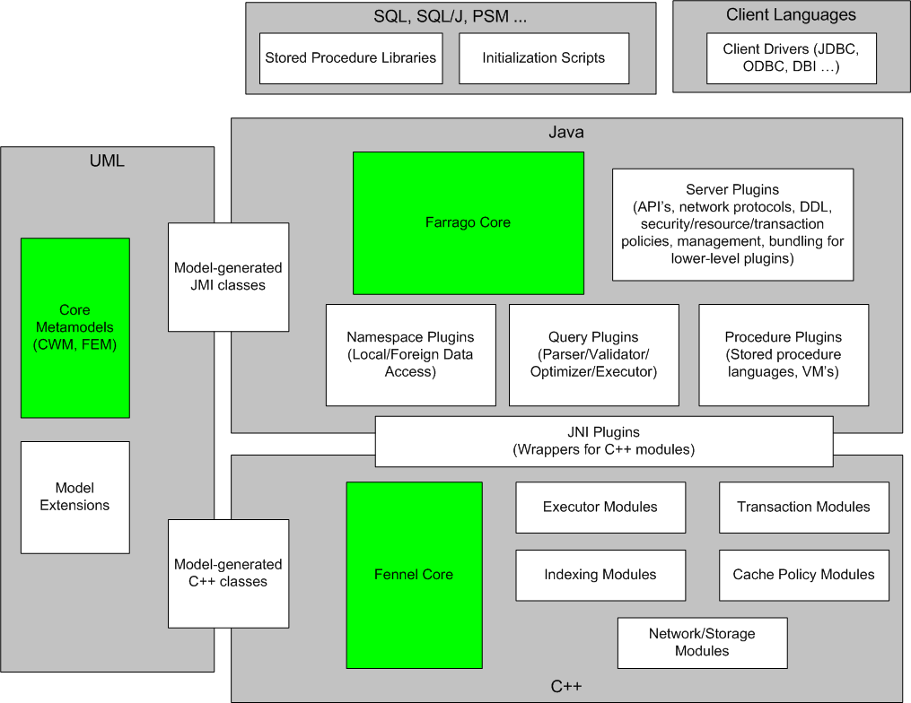
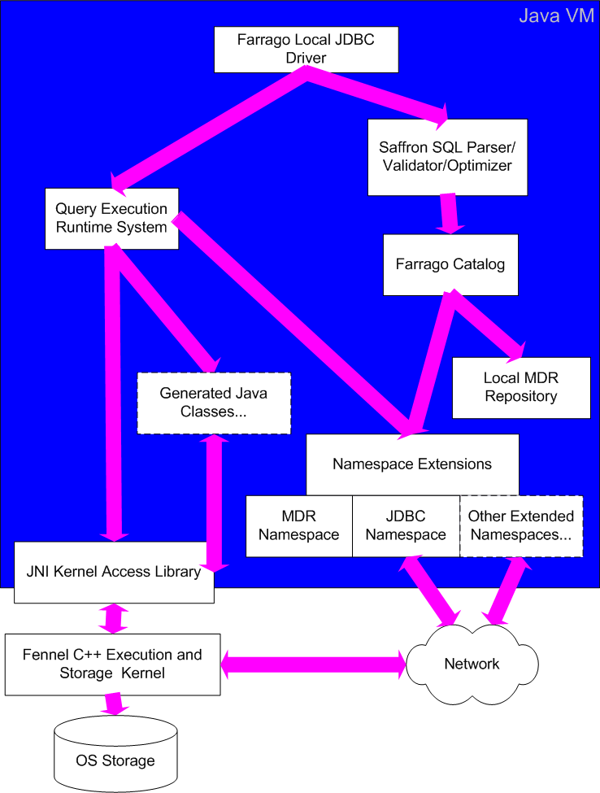

Farrago Architecture
Philosophy
Conceptually, an RDBMS is an unusual combination of two systems with
very different natures. The low level system is a computation- and
data-intensive kernel in which scalability, performance, and
reliability are the key factors. The high level system is simply an
application server in which the data model defines relational objects,
and the "business logic" is SQL parsing, optimization, execution, and
extensibility. Many DBMS implementations fail to recognize this dual
nature and have serious implementation flaws as a result. Heavyweight
commercial systems treat the entire server as a kernel, which makes
development of higher level logic unnecessarily difficult as it is
bound by constraints only suitable for the lower level system.
Lightweight systems (e.g. most Java databases) go to the opposite
extreme, focusing on simplicity rather than performance, which
necessarily limits their applicability. One objective of the Farrago
project is to demonstrate that it's possible to have it all without
creating something too monstrous. Another is to build up a modular
plugin framework so that other projects can use Farrago as a base for
more specialized SQL engines.
Plugin Architecture
In line with these goals, the Farrago architecture defines a
multi-language pluggable framework with extensibility in a variety of
directions:

The frameworks span a number of programming, scripting, and modeling languages:
- UML is used for defining all metadata models and driving the
model-driven code generation build process. Farrago uses the standard
CWM metamodel from OMG as a base, and defines its own
extension model (FEM) as well. Projects which want to customize the
Farrago metadata can define their own model extensions. All
definitions which are shared across multiple programming languages are
defined in UML.
- C++ is used in the server framework for components in which a
native code implementation is required for performance, API access, or
low-level system access. The C++ portion of the framework (known as
Fennel) is not directly pluggable. Instead, extension C++ modules can
be defined together with wrapper Java plugins as companions
(interfacing via JNI). We use the term module
to describe a component which is designed to fit into a predefined
interface, while the term plugin is reserved for modules
which can be added to an already-installed server via DDL
commands. The C++ portion of the framework is optional; it is
possible to build a pure-Java DBMS by extending the Farrago framework,
although not all of the necessary components are currently provided.
- Java is the preferred environment for extensibility in the server
framework since as a managed code environment it is much safer than
C++ and provides access to a large number of important API's. Java
plugins may be pure-Java, or may include C++ modules called via JNI.
- Beyond plugins defining the server's behavior, another layer of
extensibility exists in support for user-defined types and routines
(including stored procedures and SQL scripts).
- Finally, access to the server from as many client environments as
possible is another important direction for extensibility.
Component Stack
The diagram below illustrates at a coarse granularity the various layers
involved in the component stack of the Farrago platform:

The Java VM can be a top-level container for a standalone server (with
RMI from client JDBC drivers), or Farrago can be hosted by other
containers such as J2EE application servers in a multi-tier
configuration. The Farrago framework maintains SQL-specific state per
connected session. Parsing, validation, and optimization work against
the catalog, which combines a local MDR repository with an extensible
namespace system. User-defined SQL/MED namespace plugins can be used
to "mount" foreign data sources, causing them to appear as additional
top-level catalogs. Query execution plans are implemented as a
combination of C++ access paths and generated Java code, with access
to both local storage and foreign data (via namespace support).
Technology
Today's best application server technology is Java-based, and Java
support for extensibility through language features such as reflection
is excellent, so high-level Farrago components are developed in Java.
Kernel-level components are implemented in C++ for efficiency (even
java.nio can't make up for the lack of pointers in Java). JNI is used
to bridge the top and bottom halves.
Farrago incorporates the following independent open-source projects
(some of which depend in turn on other projects):
- Fennel for the C++ kernel.
- Boost and STLport for portable C++ class libraries.
- Netbeans MDR for all
metadata management (system catalog object model and persistence, XMI
import/export, etc.)
- JavaCC for
Java parser generation
- Janino for
runtime compilation of generated Java code
- RmiJdbc for
client/server connectivity
- iSQL-Viewer for
a GUI front-end
- sqlline for
a command-line interface
- HSQLDB for repository persistence
The system catalog model is based on the Common Warehouse Metamodel, with
Farrago-specific extensions.
In addition, our intention is to define adapters for embedding Farrago
in various application servers. For a lightweight configuration, it
will be deployable as a servlet in a server such as Tomcat. For a heavyweight
configuration (e.g. with distributed transaction support and JMX
xmonitoring), it will be deployable in a full-fledged application
server such as JBoss. Currently
supported containers are a standalone RMI server and direct embedding
as a serverless JDBC engine.